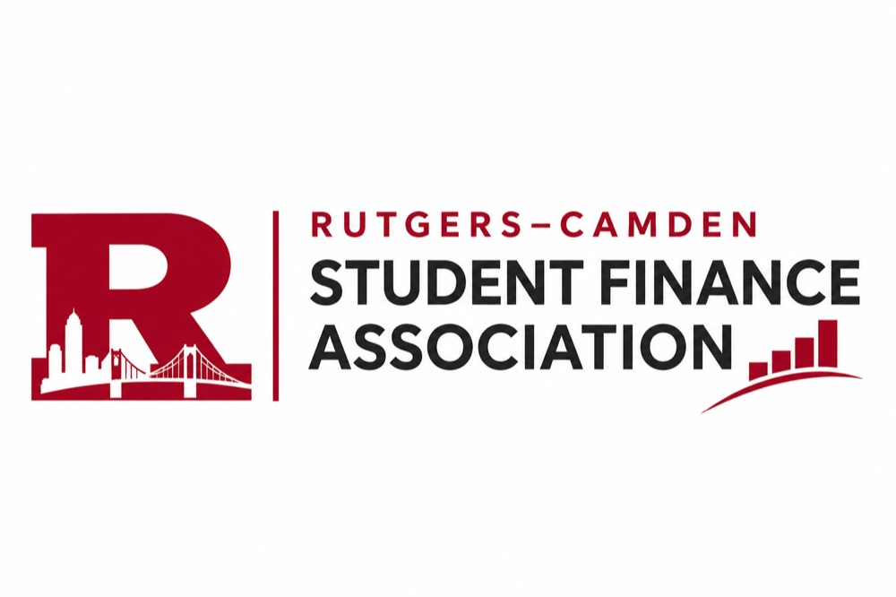

About SFA
We bring Rutgers students together to explore business and finance through career development, workshops, and conversations with people in the field.
Our mission
We’re building an active, connected student community where Rutgers students can explore finance careers, develop quantitative and analytical skills, and practice interviewing and networking.
Students from every major are welcome. We aim to engage students who study online and in person.
Become a member
Faculty advisor
Professor Ralph Giraud
Ralph Giraud brings more than three decades of financial industry experience to the classroom as a Teaching Instructor in Finance at Rutgers School of Business–Camden (RSBC), where he has taught since 2013. His career has spanned fixed income portfolio management, securities trading, institutional and retail investment sales, and consulting on the financial services sector.
He managed the $2.1 billion investment portfolio of Provident Bank of Maryland, now part of M&T Bank, and served as a mortgage-backed securities portfolio manager for Cumberland Advisors. Earlier, he held fixed income roles at Pershing, LLC, where he established the U.S. Government Agency Trading and Sales division. He also held trading and sales positions with firms including Legg Mason and Dreyfus.
At RSBC, he advises the Student Finance Association, the Rutgers Women of Business Alliance, and student teams in the CFA Society of Philadelphia’s Investment Research Challenge. He is a past President of both the Philadelphia Council for Business Economics and the Washington (D.C.) Association of Money Managers.
As RSBC’s University Representative to the CFA Society of Philadelphia, he organizes the annual “Inve$t In Her Future” networking event and the “College to Corporate” mentorship program, which introduce female students to careers in finance. Professor Giraud holds an MS in Finance from the University of Colorado Denver and a BS in Business Administration from Manhattan College.
Connect on LinkedIn